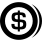
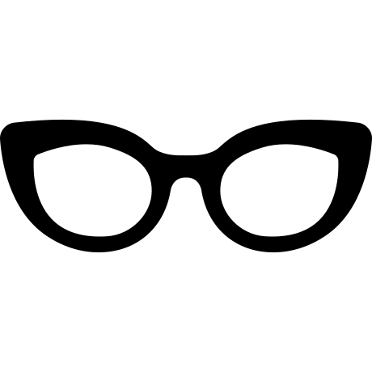
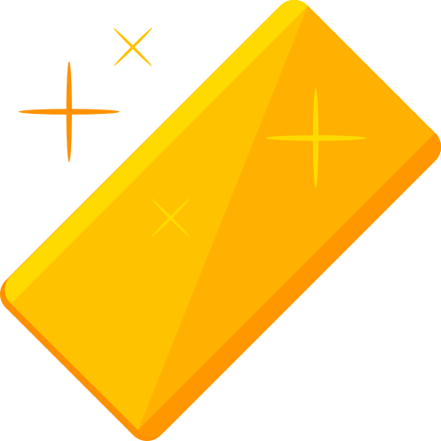
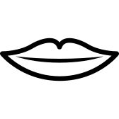
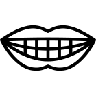

<table>

<tr>
<td><canvas id=canvas1 width=1200 height=900></td>

</tr>


</table>

<div style="display:none;">
  
</div>
<div style="display:none;">
  
</div>
<div style="display:none;">
  
</div>
<div style="display:none;">
  
</div>
<div style="display:none;">
  
</div>
<script src=drawlib1.js></script>

<script>
   canvas1.update = function(g) {
      var image = document.getElementById('source');
      var image1 = document.getElementById('source1');
      var image2 = document.getElementById('source2');
      var image3 = document.getElementById('source3');
      var image4 = document.getElementById('source4');


      var x = this.cursor.x;
      var y = this.cursor.y;
      const rt = 0.002*(y-this.height/2);


// reset current transformation matrix to the identity matrix
      g.drawImage(image1, this.width/5.2, this.height/4.6, this.width/1.8,this.height/1.6);
      g.shadowBlur = 10;


      g.translate((this.width/3.5),(this.height/2.3));
      g.rotate(rt);
      g.drawImage(image, ((x-(this.width/2))/30) , ((y-(this.height/2))/30),this.width/7,this.width/7 );
      g.setTransform(1, 0, 0, 1, 0, 0);


      g.translate((this.width/1.8),(this.height/2.3));
      g.rotate(rt);
      g.drawImage(image, ((x-(this.width/2))/30) , ((y-(this.height/2))/30),this.width/7,this.width/7);
      g.setTransform(1, 0, 0, 1, 0, 0);

     g.lineWidth = 5;

      g.beginPath();
      g.moveTo(0, 0);
      g.lineTo(this.width, 0);
      g.lineTo(this.width, this.height);
      g.lineTo(0, this.height);
      g.lineTo(0, 0);
      g.stroke();


      var x = this.cursor.x;
      var y = this.cursor.y;
      var z = this.cursor.z;
      if (z == 0) {
         x = this.width  / 2 + 30 * Math.sin(time) ;
         y = this.height / 2 + 30 * Math.cos(time);
      }

      var freq = z == 0 ? 6 : 12;
      var f = .2;
      var angle = -2 * f * (Math.sin(freq * time) - 0.5);
      var angle2 =     f * (Math.cos(freq * time) - 1);

      var flapY = 40 * Math.sin(angle);
      var flapX = 40 * Math.cos(angle);

      var flapY2 = 40 * Math.sin(2 * angle2);
      var flapX2 = 40 * Math.cos(2 * angle2);


      g.drawImage(image2, x, y,this.width/5,this.width/5 );


      if((time.toString()[2]==1)||(time.toString()[2]==2)){

      g.drawImage(image4, this.width/4.5,this.height/2 ,this.width/2,this.width/2);


      }
      else{
               g.drawImage(image3, this.width/4.5,this.height/2 ,this.width/2,this.width/2);

      };

   
      }


   draw2DCanvases([ canvas1]);
</script>


